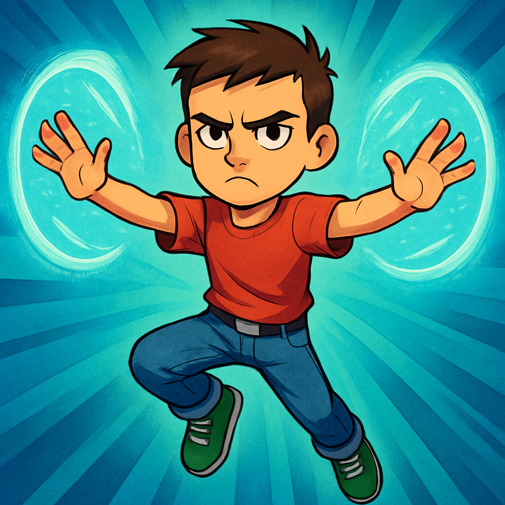
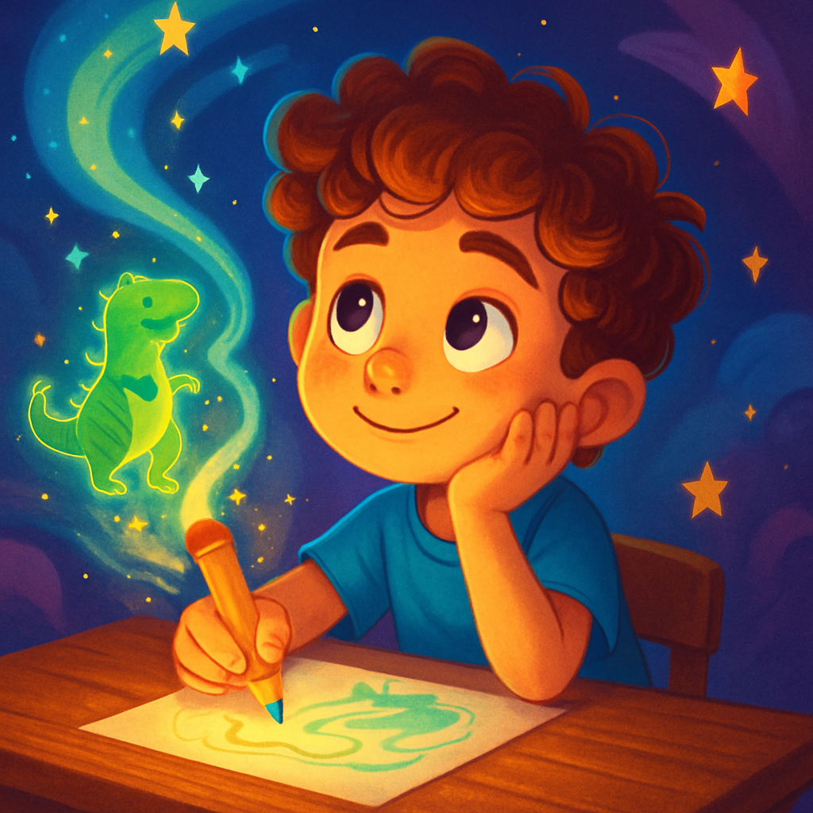
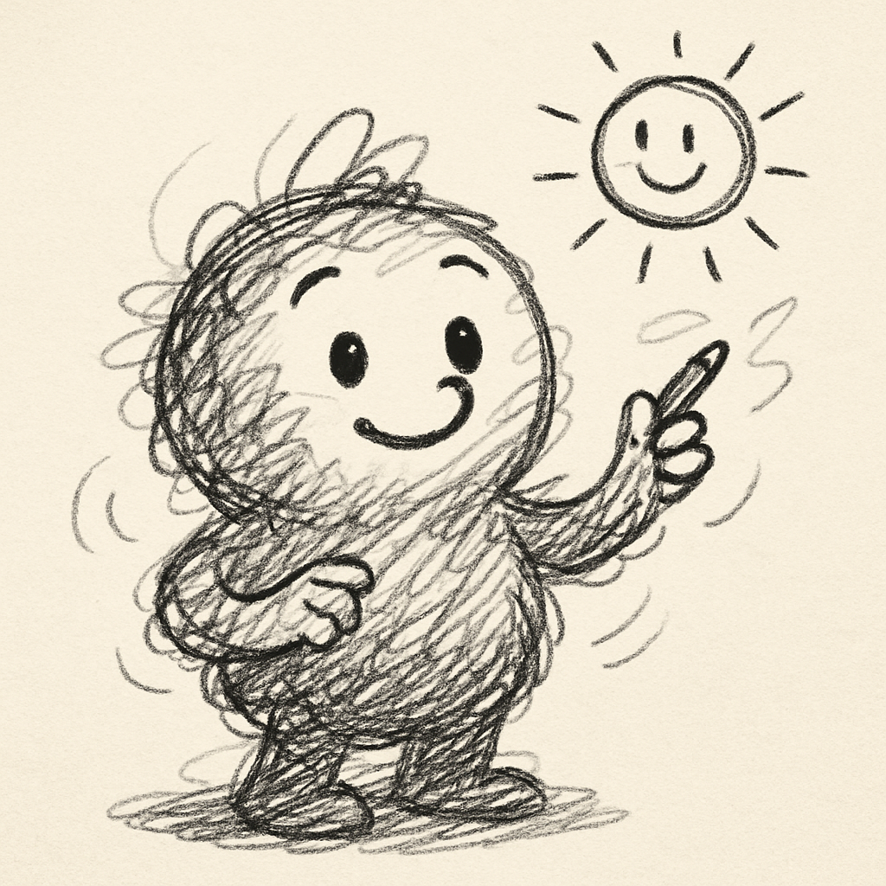
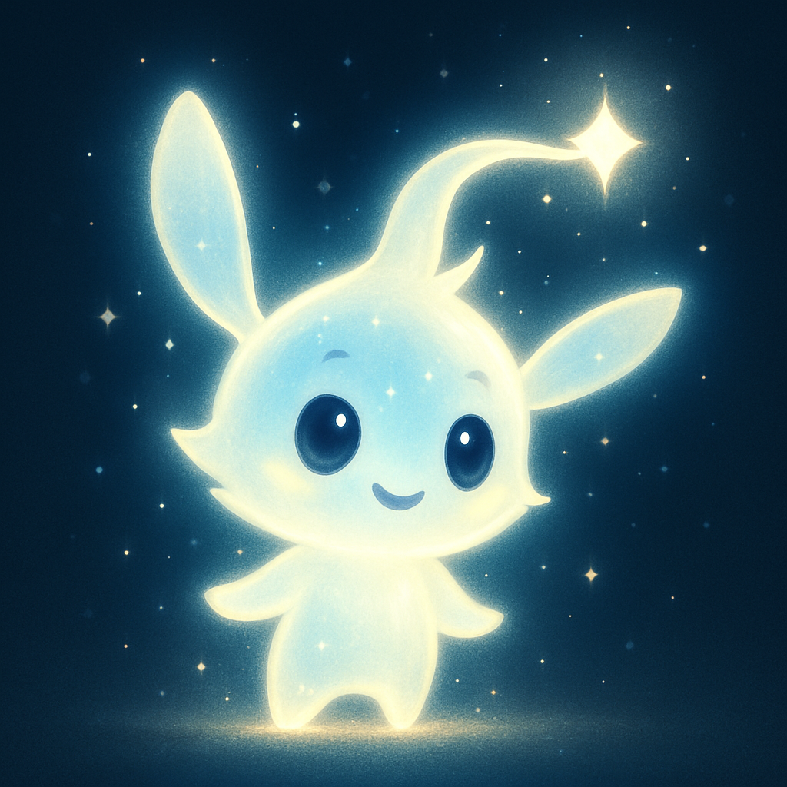
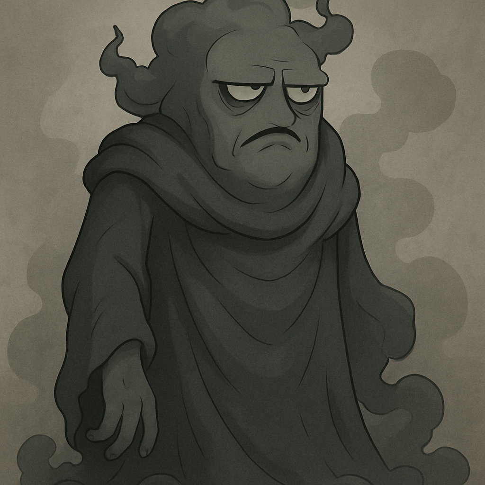

Conheça os Guardiões (e os Vilões)
Armando
O Herói Voador. Cético no início, Armando descobre sua coragem e o poder de voar e criar barreiras de força. Ele é o protetor da dupla.
Bernardo
O Construtor de Mundos. Com seu lápis mágico e imaginação sem limites, Bernardo pode desenhar qualquer coisa e torná-la real. Ele é o coração criativo da aventura.
Rabis
O Guia Rabiscado. Um amigo leal feito de traços de caneta, Rabis não fala, mas seus desenhos no ar dizem tudo. Ele é o mapa e a consciência da equipe.
Faísca
A Ideia Voadora. Uma pequena criatura de luz pura, Faísca é rápida, curiosa e sempre aparece para alertar sobre o perigo ou guiar para a próxima aventura.
A Grande Cinza / Senhor Tédio
O Vilão da Monotonia. A personificação do tédio, da dúvida e da falta de criatividade. Seu objetivo é simples e terrível: tornar tudo igual, silencioso e cinzento.